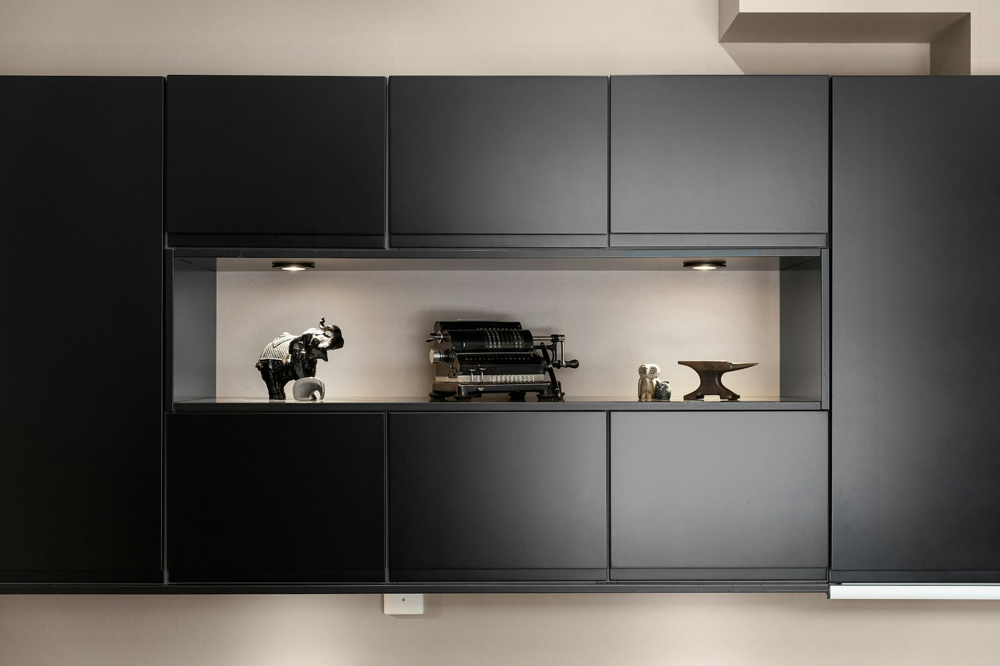
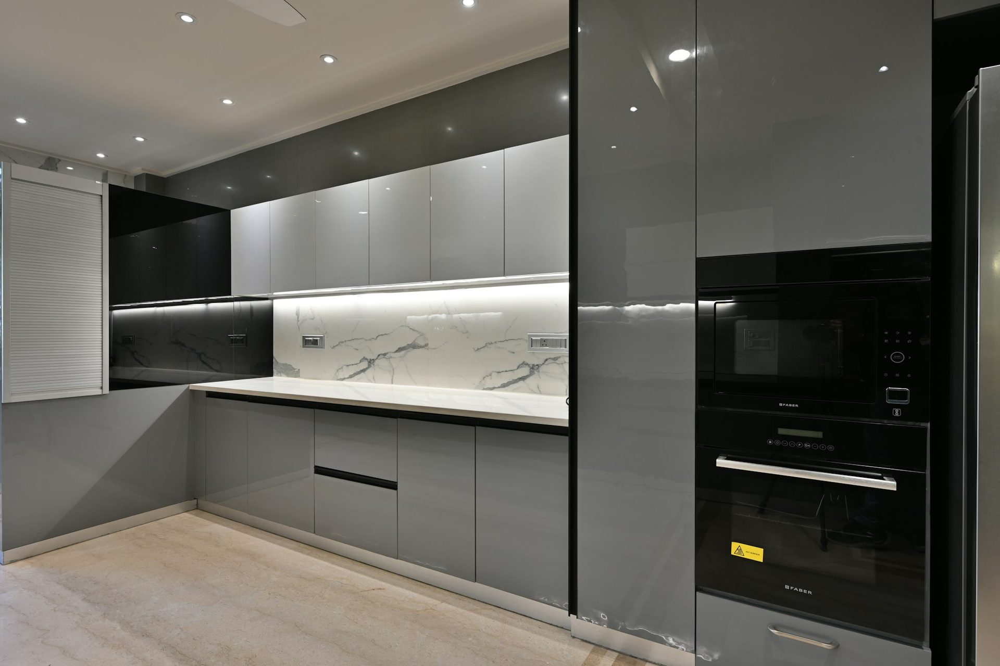
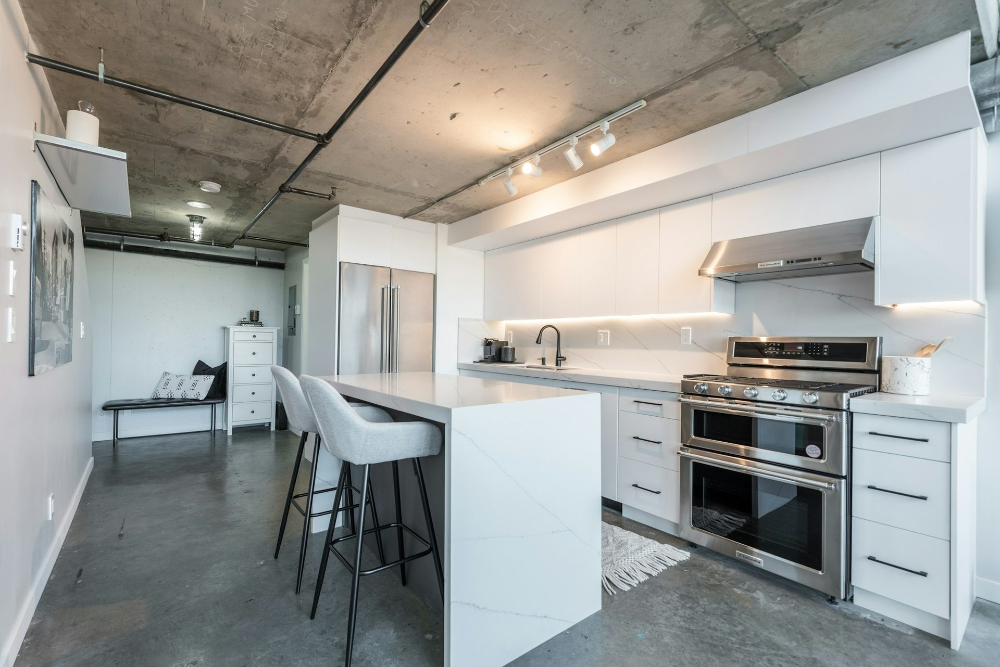

Butler's pantries
that earn the door.
The room that lets your kitchen stay beautiful while the actual cooking happens somewhere else. From $4,000 alongside a new kitchen.

The case for one
Every mess
gets a home.
Ask any client with a butler's pantry what they would keep if they rebuilt tomorrow. It is never the splashback.
Appliances live plugged in and out of sight. Sunday's dishes go behind a door. The bulk shop unloads onto a bench nobody has to look at. Your island stays a clean stone surface — which is, after all, what you paid for.
- Second sink and dishwasher, so the main kitchen never stacks up
- Appliance bench with dedicated power for every machine you own
- Floor-to-ceiling storage sized to the products you actually buy
- Concealed or flush push-to-open door from the main kitchen
- Optional second oven, microwave drawer or bar fridge

Three configurations
Sized to your wall,
not to a brochure.
The walk-through
A corridor between kitchen and laundry or garage entry. Open shelving above, drawers below, a laminate or compact stone bench. The most efficient money in the whole renovation.
Get a fixed quoteThe second kitchen
Full stone benchtop, second sink, dishwasher, floor-to-ceiling joinery, dedicated appliance run and a concealed door. This is what most clients build.
Get a fixed quoteThe scullery
Where the pantry becomes a room in its own right — second oven, coffee station, glazed display cabinetry, a window, and the same materials as the kitchen it serves.
Get a fixed quoteIndicative for Rockhampton in 2026, assuming the pantry is built alongside a Bilt & Co kitchen. Standalone projects are quoted individually.
Risk, removed
Five promises we
put in the contract.
A kitchen is one of the largest cheques most households ever write to a small business. These are the five things that go wrong most often — so these are the five things we guarantee.
Start with a free designThe price does not move
Once your design is signed off, the quote is fixed. We have never issued a surprise variation for our own scope of works. If we get a measurement wrong, we wear it.
Ten years, in writing
Cabinetry and workmanship, warranted for a decade, backed by Blum’s lifetime mechanical warranty on every hinge and runner we install.
One team, drawing to handover
We specify your cabinetry to the millimetre, take delivery of it and install it ourselves. No subcontracted installers — the people in your house are on our payroll and their name is on the job.
On the day we said
A written site programme before demolition, and a $200-a-day credit back to you for every working day we run past our own completion date.
Your drawings are yours
If our quote does not work for you, you keep the 3D design and the measured drawings of your own room. No charge, no hard feelings.
In their words
The people who already
cook in one.
“For what we paid compared to what similar kitchens were costing elsewhere, we’re extremely happy with it.”
Rockhampton
“Could not be happier with our kitchen. The funny thing is, pretty much everyone who’s come over since we installed it has asked who did our kitchen and assumed we spent a lot more than we actually did.”
Gladstone
“Once we saw it in person, it was a pretty easy decision. It looked even better than we expected.”
Caboolture
Frequently asked
Butler's pantry questions
If your question is not here, call the studio. We would rather talk it through than have you guess.
Ask us directly →How much does a butler's pantry cost in Rockhampton?
A butler’s pantry added to a Bilt & Co kitchen starts at $4,000 for a compact walk-through with open shelving and a laminate bench. A full second kitchen — second sink, dishwasher, stone benchtop, floor-to-ceiling joinery and a concealed door — typically runs $7,700 to $14,200.
How much space does a butler's pantry need?
A functional walk-through needs about 1.1m of clear floor between benches and roughly 2.4m of run. Below that we would usually recommend a tall appliance cupboard or a dedicated pantry wall instead — and we will tell you so rather than sell you something that annoys you daily.
Can one be added to an existing kitchen?
Often yes, most commonly by borrowing space from an adjoining laundry, garage entry or oversized walk-in pantry. It becomes a building question as much as a joinery one, so we bring our builder through at the first visit and you get one honest answer.
Do I need plumbing in there?
Not necessarily, but a second sink is the one feature clients say they would never give up. If plumbing is straightforward we almost always recommend it; if the wall is on the far side of the house we will show you the cost before you decide.

Start here
Show us the wall.
We will show you the room.
Ninety minutes at your kitchen table, with your plans, your photographs and your budget in front of us. You leave with a concept direction, a realistic investment range and no obligation whatsoever.